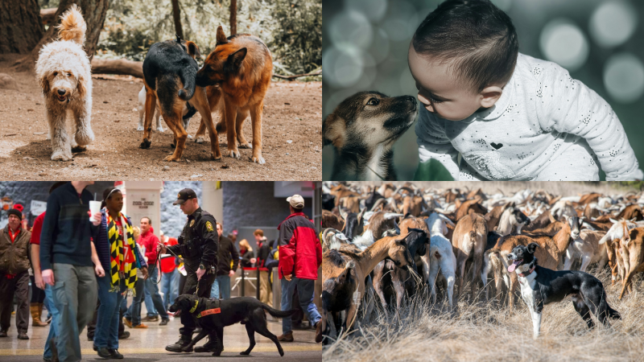
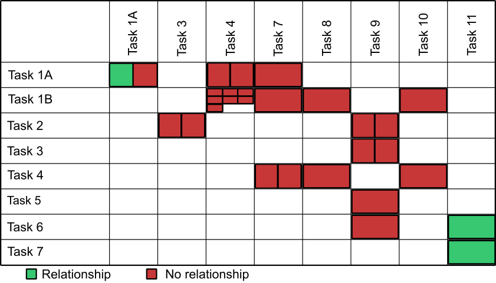

Impulsivity as a behavioral trait in dogs

We recently had a paper published in Journal of Comparative Psychology that was a systematic review and meta-analysis on whether impulsivity is a behavioral trait in dogs. This work was conducted with Jessica Barela and Yasmine Worth and was selected as an APA Editor’s Choice article.
What is impulsivity?
Impulsivity is a concept that means a lot of things to different people. And it is particularly important in dogs. Being impulsive can mean that your dog is unable to stop themselves from doing something like chasing after a squirrel, barking at another dog walking by, rolling in the stinkiest junk they come across, or jumping into the pool any chance they get.

Being impulsive can also mean that your dog cannot wait for things. Does your dog start eating while you’re still pouring food into their bowl? Do they run into the door as you’re opening it to let them outside? Would they eat an entire bag of dog food if it were available?
Being impulsive can mean that your dog takes risks. A dog that comes home with a nose full of porcupine quills or claw marks raked across their nose from a close encounter with a neighborhood cat is showing impulsivity.
Finally, being impulsive can mean that your dog is easily distracted. Rather than focusing attention on one thing, some dogs may lose their focus from one thing in their environment when something new appears. The classic joke of dogs stopping what they are doing the instant a squirrel is detected personifies this idea. Or maybe while they are supposed to be retrieving a ball, they stop and smell the flowers.
Why is it important?
Impulsivity is important in dogs because we often want them to resist temptation, wait for things, and avoid risks. In fact, many dog training programs focus specifically on impulse control. Certainly, for pet dogs this is important because we want them to be able to nicely interact with other dogs at the dog park or be friendly to a small child who may not know how to appropriately pet a dog.

Controlling impulsivity is critical in working dogs, too. Detection dogs have a job to do and can’t be distracted by people walking by, potentially with yummy food to snatch. Likewise, herding dogs must focus on their task and avoid other distractions but also inhibit their strong prey drive to focus on herding and not capturing.
In short, impulsivity is often a problem behavior in dogs. Though there can be times when impulsivity is good, we often want dogs to have self-control.
What did we do?
Since it is so important in dogs, we were interested in whether impulsivity is a behavioral trait. That is, we wondered if dogs are consistently impulsive in different ways. Is a dog that can’t resist the temptation to roll in something also likely to take risks around bigger critters or dig through the trash? If impulsivity is a trait, then we should be able to screen for it and predict behavior in new contexts. Or develop training techniques that, when they work in one situation, should also apply to other situations.
To investigate this question, we didn’t run our own study. Instead, we scoured the scientific literature to find other studies that looked into this question. Then we combined all of these studies and ran some statistics to see if there was evidence across studies for impulsivity as a behavioral trait. We searched several databases and found almost 10,000 articles that mentioned dogs and impulsivity. We winnowed that down to 13 articles that actually collected data on different impulsivity tasks1 in the same dogs or a measure of the owner’s perceptions of their dog’s impulsivity2. That gave us 31 pairs of impulsivity tasks and 15 pairs of owner perception ratings and impulsivity tasks. This allowed us to answer two questions:
- Are dogs’ impulsivity levels related across tasks?
- Are dogs’ impulsivity levels in tasks related to owner perceptions of their impulsivity?
What did we find?
Across the 31 impulsivity task pairs, there was a relationship between tasks in only three of them. One of those relationships was between two very similar tasks (though another study did not find a relationship between the same tasks, and it had a larger sample size).

Across the 15 task/owner perception pairs, there was a relationship in five of them. However, in all tasks that showed a relationship with owner perception, there were other studies that did not show a relationship.

Finally, we conducted a meta-analysis on one pair of tasks (Tasks 1B & 4) that had seven studies attempt to look for a relationship. Meta-analyses combined the effects in all of the studies to see if there is an overall effect. In each individual study, there was no relationship in performance between these tasks, and so there was no overall relationship either.
What does this mean?
Let’s go back to our original research questions.
- Are dogs’ impulsivity levels related across tasks?
- There is not good evidence for relationships in performance across different tasks—even for relatively similar tasks.
- Are dogs’ impulsivity levels in tasks related to owner perceptions of their impulsivity?
- There is more evidence for this, but it is still not very strong. Owner perception of dog impulsivity matched behavior in some tasks, but even in those cases there are contradictory findings in other studies
So in general, we don’t have a lot of strong evidence that impulsivity is a behavioral trait in dogs. But this may not be too problematic because we can see similar issues with impulsivity in humans. Instead of impulsivity being an overall trait, it makes sense that there may be multiple types of impulsivity (like defined in the first section). So we might not expect too many relationships across different categories of impulsivity. However, that does not explain why we don’t see stronger relationships between tasks in the same categories. Answering this question is going to require more studies or much larger studies.
Reference
Barela, J., Worth, Y., & Stevens, J.R. (2024). Impulsivity as a trait in domestic dogs (Canis familiaris): A systematic review and meta-analysis. Journal of Comparative Psychology, 138(1), 20–31. View freely available preprint
Updated 2024-04-12 to include links to photo sources where available.
Footnotes
We don’t go into the actual tasks here, but they involved inhibiting the drive to move straight at visible treats when you need to go around them or waiting for delayed treats or other measures of impulsivity.↩︎
This survey is called the Dog Impulsivity Assessment Scale (DIAS), and it measures their ability to regulate behavior, their aggression, and how they respond to things in their environment. Wright, H. F., Mills, D. S., & Pollux, P. M. J. (2011). Development and validation of a psychometric tool for assessing impulsivity in the domestic dog (Canis familiaris). International Journal of Comparative Psychology, 24(2), 210–225.↩︎